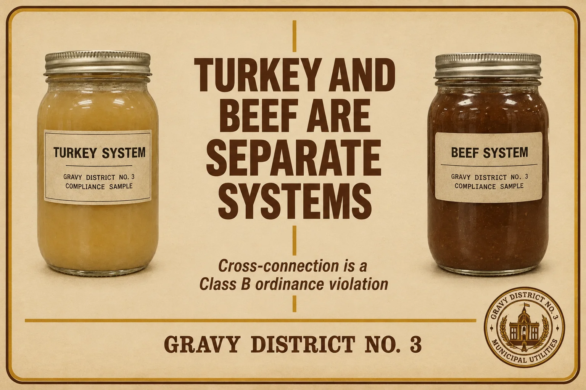
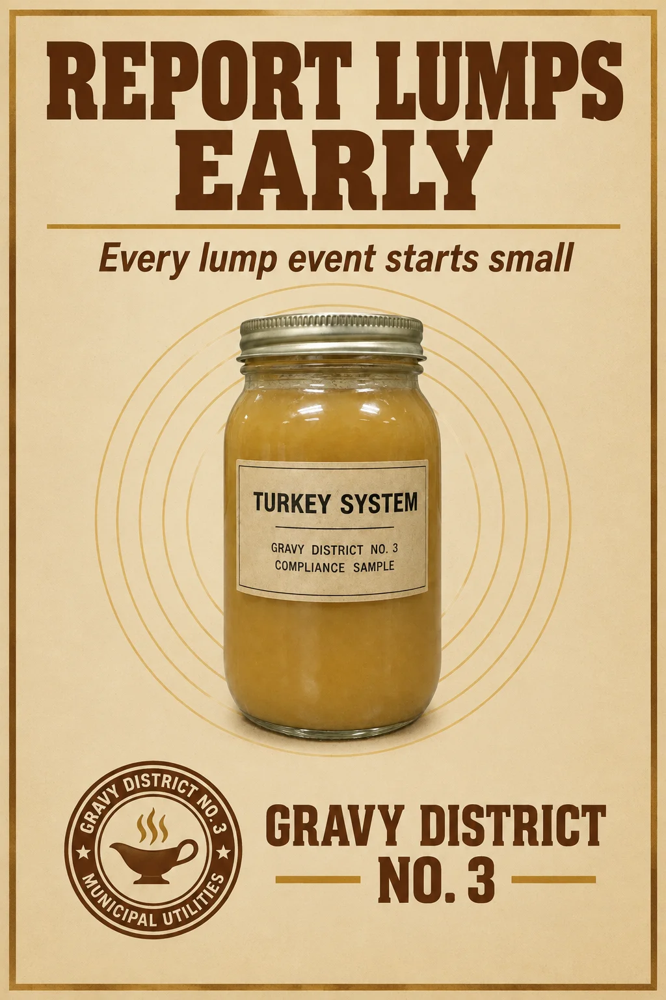
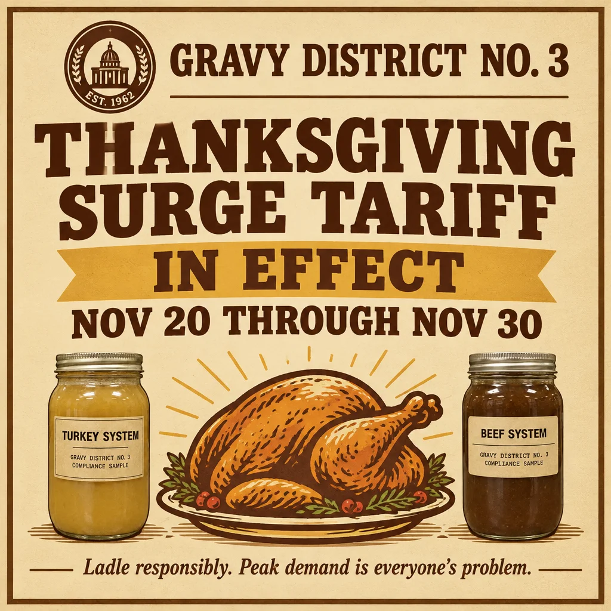

Public Outreach Materials
Materials from the District's 2026 public awareness campaign. Schools, churches, and supper clubs may display these without further permission. Businesses outside the District may not, and the District will find out, because everyone here talks.



Printed copies are available at the office counter while supplies last. Supplies have lasted since 2019.